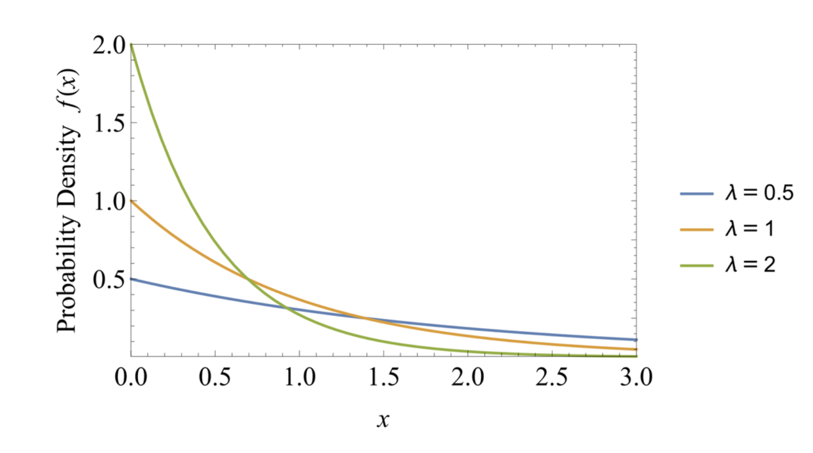

离散分布
二项分布（Binomial Distribution）
二项分布描述在固定次数 $n$ 的独立重复试验中成功的次数。
$$ \text{Probability Mass Function: }p_X(k) = \binom{n}{k} p^k (1-p)^{n-k} $$ $$ \text{Moment Generating Function: }M_X(s):=\mathbb E[e^{sX}] = \left( pe^{s} + (1 - p) \right)^n $$几何分布（Geometric Distribution）
$$ \begin{align*} \text{PMF: } &p_X(k) = (1 - p)^{k-1} p, \quad k = 1, 2, 3, \ldots \\ \text{Expectation: } &\mathbb{E}[X] = \frac{1}{p} \\ \text{Variance: }& \text{Var}(X) = \frac{1-p}{p^2} \\ &\mathbb P(X > k) = (1 - p)^k \end{align*} $$如果随机变量 $X$ 代表在获得第一个成功之前进行的试验次数，那么 $X$ 服从几何分布，可以表示为 $X \sim \text{Geometric}\left(p\right)$，其中 $p$ 是每次试验中成功的概率。
$$ \text{MGF: }M_X(s) = \frac{p e^{s}}{1 - (1 - p) e^{s}}, \quad \text{when } e^{s} < \frac{1}{1 - p} $$柏松分布（Poisson Distribution）
$$ \begin{align*} \text{PMF: } & p_X(k) = \frac{e^{-\lambda} \lambda^k}{k!}, \quad k = 0, 1, 2, \ldots \\ \text{Expectation: } & \mathbb{E}[X] = \lambda \\ \text{Variance: } & \text{Var}(X) = \lambda \end{align*} $$在泊松分布中，$\lambda$ 通常表示在固定时间或空间区间内事件平均发生的次数（这也解释了为什么实验的期望是 $\lambda$），泊松分布由 $\lambda$ 唯一确定。
柏松分布实际上是二项分布的极限，可以参考 'poisson limit theorem'. 粗略来说，考虑服从二项分布的随机变量 $X$, $X \sim \text{Binomial}\left(n, \frac{\lambda}{n}\right)$.当 $n \rightarrow \infty$ ，$X$ 就近似服从泊松分布。
泊松分布用于小概率事件的估计。不使用二项分布的原因可能是二项分布的精确计算很困难，而在 $p$ 较小时泊松分布能给出一个非常不错的近似。
$$ \text{MGF: }M_X(s) = e^{\lambda \left( e^{s} - 1 \right)} $$连续分布
指数分布（Exponential Distribution）
$$ \begin{align*} \text{Probability Density Function: } & f_X(x) = \begin{cases} \lambda e^{-\lambda x}, & x \geq 0, \\ 0, & \text{otherwise} \end{cases} \\ \text{Cumulative Distribution Function: } & F_X(x) = \begin{cases} 1 - e^{-\lambda x}, & x \geq 0, \\ 0, & \text{otherwise} \end{cases} \\ \text{Survival Function: } & \mathbb P(X > x) = e^{-\lambda x} \\ \text{Expectation: } & \mathbb{E}[X] = \frac{1}{\lambda} \\ \text{Variance: } & \text{Var}(X) = \frac{1}{\lambda^2} \end{align*} $$
可以把指数分布看作极限情况下的几何分布（geometric distribution）。
由 $\mathbb P(X > t) = e^{-\lambda t}$，我们可以用指数分布来表示"存活时间"。
这里的 $\lambda$ 是"瞬时死亡风险"，与"风险函数"相关。事实上，我们有
$$ \lambda \text{d}t \approx \mathbb P(t < T < t+\text{d}t \mid t < T) $$此外，指数分布擅长表示连续的无记忆性的随机变量，即满足
$$ \mathbb P(T > t) = \mathbb P(T > a + t \mid T > a) $$的随机变量。
$$ \text{MGF: } M_X(s) = \frac{\lambda}{\lambda - s}, \quad \text{when } s < \lambda $$